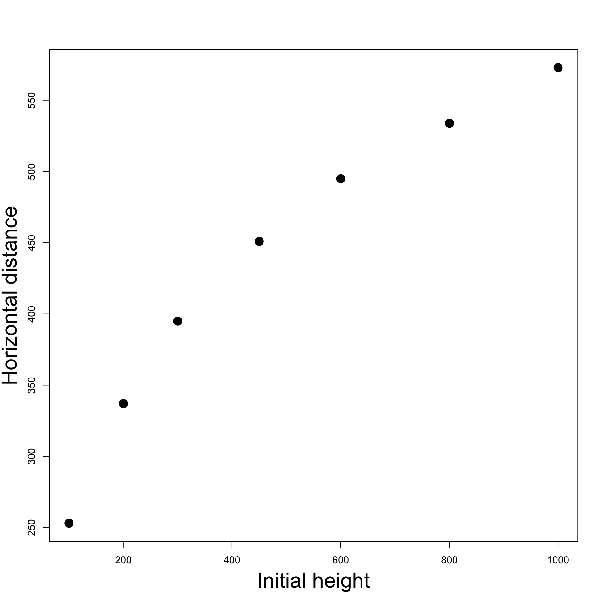

GNP.deflator GNP Unemployed Armed.Forces Population Year Employed
1947 83.0 234.289 235.6 159.0 107.608 1947 60.323
1948 88.5 259.426 232.5 145.6 108.632 1948 61.122
1949 88.2 258.054 368.2 161.6 109.773 1949 60.171Statistical Models
Lecture 10
Lecture 10:
Practical regression
Outline of Lecture 10
- Model selection
- Comparison of nested regression models
- Examples of model selection
Part 1:
Model selection
Testing regression parameters
Summary: We have seen
- t-test
- Test the significance of individual parameters \begin{align*} H_0 & \colon \, \beta_j = 0 \\ H_1 & \colon \, \beta_j \neq 0 \end{align*}
Testing regression parameters
- F-test
- Test the overall significance of the model
- This is done by comparing two nested regression models \begin{align*} \textbf{Model 1:} & \qquad Y_ i= \beta_1 + \varepsilon_i \\[10pt] \textbf{Model 2:} & \qquad Y_ i= \beta_1 + \beta_2 x_{2, i}+ \ldots + \beta_p x_{p, i} + \varepsilon_i \end{align*}
- The comparison is achieved with F-test for \begin{align*} H_0 & \colon \, \beta_2 = \beta_3 = \ldots = \beta_p = 0 \\ H_1 & \colon \text{ At least one of the } \beta_i \text{ is non-zero} \end{align*}
- Choosing the Full Model 2 is equivalent to rejecting H_0
More general nested models
- Consider the more general nested models
\begin{align*} \textbf{Model 1:} & \quad Y_ i =\beta_1 + \beta_2 x_{2, i}+ \ldots + \beta_{k} x_{k, i} + \varepsilon_i \\[10pt] \textbf{Model 2:} & \quad Y_ i= \beta_1 + \beta_2 x_{2, i}+ \ldots + \beta_{k} x_{k, i} + \beta_{k + 1} x_{k + 1, i} + \ldots + \beta_{p} x_{p, i} + \varepsilon_i \end{align*}
Model 1 has k parameters
Model 2 has p parameters with p > k
The two models coincide if
\beta_{k + 1} = \beta_{k + 2} = \ldots = \beta_p = 0
Question: How do we decide which model is better?
Model selection
- Consider the more general nested models
\begin{align*} \textbf{Model 1:} & \quad Y_ i =\beta_1 + \beta_2 x_{2, i}+ \ldots + \beta_{k} x_{k, i} + \varepsilon_i \\[10pt] \textbf{Model 2:} & \quad Y_ i= \beta_1 + \beta_2 x_{2, i}+ \ldots + \beta_{k} x_{k, i} + \beta_{k + 1} x_{k + 1, i} + \ldots + \beta_{p} x_{p, i} + \varepsilon_i \end{align*}
- Define the predictions for the two models
\begin{align*} \hat y_i^1 & := \beta_1 + \beta_2 x_{2, i}+ \ldots + \beta_{k} x_{k, i} \\[10pt] \hat y_i^2 & := \beta_1 + \beta_2 x_{2, i}+ \ldots + \beta_{k} x_{k, i} + \beta_{k + 1} x_{k + 1, i} + \ldots + \beta_{p} x_{p, i} \end{align*}
Model selection
- Consider the more general nested models
\begin{align*} \textbf{Model 1:} & \quad Y_ i =\beta_1 + \beta_2 x_{2, i}+ \ldots + \beta_{k} x_{k, i} + \varepsilon_i \\[10pt] \textbf{Model 2:} & \quad Y_ i= \beta_1 + \beta_2 x_{2, i}+ \ldots + \beta_{k} x_{k, i} + \beta_{k + 1} x_{k + 1, i} + \ldots + \beta_{p} x_{p, i} + \varepsilon_i \end{align*}
- \mathop{\mathrm{RSS}} measures variation between data and prediction
\begin{align*} \textbf{Model 1:} & \quad \mathop{\mathrm{RSS}}_1 := \mathop{\mathrm{RSS}}(k) = \sum_{i=1}^n (y_i - \hat y_i^1)^2 \\[10pt] \textbf{Model 2:} & \quad \mathop{\mathrm{RSS}}_2 := \mathop{\mathrm{RSS}}(p) = \sum_{i=1}^n (y_i - \hat y_i^2)^2 \end{align*}
Extra sum of squares
- Consider the more general nested models
\begin{align*} \textbf{Model 1:} & \quad Y_ i =\beta_1 + \beta_2 x_{2, i}+ \ldots + \beta_{k} x_{k, i} + \varepsilon_i \\[10pt] \textbf{Model 2:} & \quad Y_ i= \beta_1 + \beta_2 x_{2, i}+ \ldots + \beta_{k} x_{k, i} + \beta_{k + 1} x_{k + 1, i} + \ldots + \beta_{p} x_{p, i} + \varepsilon_i \end{align*}
- The extra sum of squares is the difference
\mathop{\mathrm{RSS}}_1 - \mathop{\mathrm{RSS}}_2 := \mathop{\mathrm{RSS}}(k) - \mathop{\mathrm{RSS}}(p)
Construction of F-statistic
Goal: Use \mathop{\mathrm{RSS}} to construct statistic to compare the 2 models
Suppose the extra parameters of Model 2 \beta_{k+1}, \, \beta_{k+2} , \, \ldots , \, \beta_p are not important
Hence the predictions of the 2 models will be similar \hat y_i^1 \, \approx \, \hat y_i^2
Therefore the \mathop{\mathrm{RSS}} for the 2 models are similar \mathop{\mathrm{RSS}}_1 \, \approx \, \mathop{\mathrm{RSS}}_2
Construction of F-statistic
- Recall that \mathop{\mathrm{RSS}} cannot increase if we increase parameters
k < p \quad \implies \quad \mathop{\mathrm{RSS}}(k) \geq \mathop{\mathrm{RSS}}(p)
- To measure influence of extra parameters \beta_{k+1}, \, \beta_{k+2} , \, \ldots , \, \beta_p we consider the ratio \frac{ \mathop{\mathrm{RSS}}_1 - \mathop{\mathrm{RSS}}_2 }{ \mathop{\mathrm{RSS}}_2 } = \frac{ \mathop{\mathrm{RSS}}(k) - \mathop{\mathrm{RSS}}(p) }{ \mathop{\mathrm{RSS}}(p) }
Construction of F-statistic
- We now suitably rescale
\frac{ \mathop{\mathrm{RSS}}_1 - \mathop{\mathrm{RSS}}_2 }{ \mathop{\mathrm{RSS}}_2 }
- Note that the degrees of freedom are
- Model 1: k \text{ parameters } \quad \implies \quad \mathop{\mathrm{df}}_1 = n - k
- Model 2: p \text{ parameters } \quad \implies \quad \mathop{\mathrm{df}}_2 = n - p
F-statistic for model selection
Definition
The F-statistic for model selection is
\begin{align*} F & = \frac{ \mathop{\mathrm{RSS}}_1 - \mathop{\mathrm{RSS}}_2 }{ \mathop{\mathrm{df}}_1 - \mathop{\mathrm{df}}_2 } \bigg/ \frac{ \mathop{\mathrm{RSS}}_2 }{ \mathop{\mathrm{df}}_2 } \\[20pt] & = \frac{ \mathop{\mathrm{RSS}}(k) - \mathop{\mathrm{RSS}}(p) }{ p - k } \bigg/ \frac{ \mathop{\mathrm{RSS}}(p) }{ n - p } \end{align*}
Theorem: The F-statistic for model selection has F-distribution
F \, \sim \, F_{\mathop{\mathrm{df}}_1 - \mathop{\mathrm{df}}_2 , \, \mathop{\mathrm{df}}_2} = F_{p - k, \, n - p}
Rewriting the F-statistic
- Recall the formulas for sums of squares
\mathop{\mathrm{TSS}}= \mathop{\mathrm{ESS}}(p) + \mathop{\mathrm{RSS}}(p) \,, \qquad \quad \mathop{\mathrm{TSS}}= \mathop{\mathrm{ESS}}(k) + \mathop{\mathrm{RSS}}(k)
Note: \mathop{\mathrm{TSS}} does not depend on numeber of parameters
Also define the coefficient of determination for the two models
R_1^2 := R^2 (k) := \frac{ \mathop{\mathrm{ESS}}(k) }{ \mathop{\mathrm{TSS}}} \, , \qquad \quad R_2^2 := R^2 (p) := \frac{ \mathop{\mathrm{ESS}}(p) }{ \mathop{\mathrm{TSS}}}
Rewriting the F-statistic
\begin{align*} \mathop{\mathrm{RSS}}(k) - \mathop{\mathrm{RSS}}(p) & = \mathop{\mathrm{ESS}}(p) - \mathop{\mathrm{ESS}}(k) \\[10pt] & = \mathop{\mathrm{TSS}}( R^2(p) - R^2(k) ) \\[10pt] & = \mathop{\mathrm{TSS}}( R^2_2 - R^2_1 ) \\[20pt] \mathop{\mathrm{RSS}}(p) & = \mathop{\mathrm{TSS}}- \mathop{\mathrm{ESS}}(p) \\[10pt] & = \mathop{\mathrm{TSS}}- \mathop{\mathrm{TSS}}\, \cdot \, R^2 (p) \\[10pt] & = \mathop{\mathrm{TSS}}(1 - R^2(p)) \\[10pt] & = \mathop{\mathrm{TSS}}(1 - R_2^2) \end{align*}
Rewriting the F-statistic
Therefore the F-statistic can be rewritten as
\begin{align*} F & = \frac{ \mathop{\mathrm{RSS}}_1 - \mathop{\mathrm{RSS}}_2 }{ \mathop{\mathrm{df}}_1 - \mathop{\mathrm{df}}_2 } \bigg/ \frac{ \mathop{\mathrm{RSS}}_2 }{ \mathop{\mathrm{df}}_2 } \\[20pt] & = \frac{ \mathop{\mathrm{TSS}}(R^2_2 - R^2_1) }{\mathop{\mathrm{TSS}}(1 - R^2_2 )} \, \cdot \, \frac{n-p}{p-k} \\[20pt] & = \frac{ R^2_2 - R^2_1 }{1 - R^2_2} \, \cdot \, \frac{n-p}{p-k} \end{align*}
F-test for overall significance revisited
The F-test for overall significance allows to select between models \begin{align*} \textbf{Model 1:} & \qquad Y_ i= \beta_1 + \varepsilon_i \\[10pt] \textbf{Model 2:} & \qquad Y_ i= \beta_1 + \beta_2 x_{2, i}+ \ldots + \beta_p x_{p, i} + \varepsilon_i \end{align*}
Model 1 has k = 1 parameters
F-statistic for model selection coincides with F-statistic for overall significance
F = \frac{ \mathop{\mathrm{RSS}}(1) - \mathop{\mathrm{RSS}}(p) }{ p - 1 } \bigg/ \frac{ \mathop{\mathrm{RSS}}(p) }{ n - p }
Summary: F-test for model selection
Goal: Choose one of the nested models
\begin{align*} \textbf{Model 1:} & \quad Y_ i =\beta_1 + \beta_2 x_{2, i}+ \ldots + \beta_{k} x_{k, i} + \varepsilon_i \\[10pt] \textbf{Model 2:} & \quad Y_ i= \beta_1 + \beta_2 x_{2, i}+ \ldots + \beta_{k} x_{k, i} + \beta_{k + 1} x_{k + 1, i} + \ldots + \beta_{p} x_{p, i} + \varepsilon_i \end{align*}
Hypotheses: Choosing a model is equivalent to testing
\begin{align*} H_0 \colon & \, \beta_{k+1} = \beta_{k+2} = \ldots = \beta_p \\[5pt] H_1 \colon & \, \text{ At least one among } \beta_{k+1}, \ldots, \beta_p \text{ is non-zero} \end{align*}
- H_0 is in favor of Model 1
- H_1 is in favor of Model 2
Summary: F-test for model selection
- The F-statistic is
\begin{align*} F & = \frac{ \mathop{\mathrm{RSS}}_1 - \mathop{\mathrm{RSS}}_2 }{ \mathop{\mathrm{df}}_1 - \mathop{\mathrm{df}}_2 } \bigg/ \frac{ \mathop{\mathrm{RSS}}_2 }{ \mathop{\mathrm{df}}_2 } \\[20pt] & = \frac{ R^2_2 - R^2_1 }{1 - R^2_2 } \, \cdot \, \frac{n-p}{p-k} \end{align*}
- Distribution of F is
F \, \sim \, F_{ \mathop{\mathrm{df}}_1 - \mathop{\mathrm{df}}_2 , \, \mathop{\mathrm{df}}_2 } = F_{p-k, \, n-p}
Summary: F-test for model selection
- The p-value is
p = P(F_{p-k,n-p} > F)
- F-test for model selection in R:
- Fit the two models with \,\texttt{lm}
- Use the command \, \texttt{anova} \qquad\quad (more on this later)
- Alternative:
- Find R^2_1 and R^2_2 in summary
- Compute F-statistic and p-value
Part 2:
Examples of
model selection
Examples of model selection
We illustrate F-test for Model Selection with 3 examples:
- Joint significance in Multiple linear Regression
- Polynomial regression 1
- Polynomial regression 2
Example 1: Multiple linear regression
- Consider again the Longley dataset
Goal: Explain the number of Employed people Y in the US in terms of
- X_2 GNP Gross National Product
- X_3 number of Unemployed
- X_4 number of people in the Armed Forces
- X_5 non-institutionalised Population \geq age 14 (not in care of insitutions)
- X_6 Years from 1947 to 1962
Example 1: Multiple linear regression
Previously: Using t-test for parameters significance we showed that
- X_2 and X_5 do not affect Y
- X_3 and X_4 negatively affect Y
- X_6 positively affects Y
Question: Since X_2 and X_5 do not affect Y, can we exclude them from the model?
Two competing models
We therefore want to select between the models:
- Model 1: The Reduced Model without X_2 and X_5
Y = \beta_1 + \beta_3 X_3 + \beta_4 X_4 + \beta_6 X_6 + \varepsilon
- Model 2: The Full Model
Y = \beta_1 + \beta_2 X_2 + \beta_3 X_3 + \beta_4 X_4 + \beta_5 X_5 + \beta_6 X_6 + \varepsilon
R commands for reading in the data
We read the data in the same way we did earlier
Longley dataset available here longley.txt
Download the file and place it in current working directory
R commands for fitting multiple regression
- Fit the two multiple regression models
\begin{align*} \textbf{Model 1:} & \quad Y = \beta_1 + \beta_3 X_3 + \beta_4 X_4 + \beta_6 X_6 + \varepsilon\\[10pt] \textbf{Model 2:} & \quad Y = \beta_1 + \beta_2 X_2 + \beta_3 X_3 + \beta_4 X_4 + \beta_5 X_5 + \beta_6 X_6 + \varepsilon \end{align*}
- F-test for model selection is done using the command \, \texttt{anova}
- Full code can be downloaded here longley_selection.R
Anova output
Analysis of Variance Table
Model 1: y ~ x3 + x4 + x6
Model 2: y ~ x2 + x3 + x4 + x5 + x6
Res.Df RSS Df Sum of Sq F Pr(>F)
1 12 0.64164
2 10 0.44797 2 0.19367 2.1616 0.1659Interpretation:
- First two lines tell us which models are being compared
Anova output
Analysis of Variance Table
Model 1: y ~ x3 + x4 + x6
Model 2: y ~ x2 + x3 + x4 + x5 + x6
Res.Df RSS Df Sum of Sq F Pr(>F)
1 12 0.64164
2 10 0.44797 2 0.19367 2.1616 0.1659Interpretation:
- \texttt{Res.Df} \, are the degrees of freedom of each model
- The sample size of longley is 16
- Model 1 has k=4 parameters
- Model 2 has p=6 parameters
- \mathop{\mathrm{df}}_1 = n - k = 16 - 4 = 12 \quad \qquad \mathop{\mathrm{df}}_2 = n - p = 16 - 6 = 10
Anova output
Analysis of Variance Table
Model 1: y ~ x3 + x4 + x6
Model 2: y ~ x2 + x3 + x4 + x5 + x6
Res.Df RSS Df Sum of Sq F Pr(>F)
1 12 0.64164
2 10 0.44797 2 0.19367 2.1616 0.1659Interpretation:
- \texttt{Df} \, is difference in degrees of freedom
- \mathop{\mathrm{df}}_1 = 12
- \mathop{\mathrm{df}}_2 = 10
- Therefore the difference is \mathop{\mathrm{df}}_1 - \mathop{\mathrm{df}}_2 = 12 - 10 = 2
Anova output
Analysis of Variance Table
Model 1: y ~ x3 + x4 + x6
Model 2: y ~ x2 + x3 + x4 + x5 + x6
Res.Df RSS Df Sum of Sq F Pr(>F)
1 12 0.64164
2 10 0.44797 2 0.19367 2.1616 0.1659Interpretation:
- \texttt{RSS} \, is the residual sum of squares for each model
- \mathop{\mathrm{RSS}}_1 = 1.32336
- \mathop{\mathrm{RSS}}_2 = 0.83935
- \texttt{Sum of Sq} \, is the extra sum of squares
- \mathop{\mathrm{RSS}}_1 - \mathop{\mathrm{RSS}}_2 = 0.48401
Anova output
Analysis of Variance Table
Model 1: y ~ x3 + x4 + x6
Model 2: y ~ x2 + x3 + x4 + x5 + x6
Res.Df RSS Df Sum of Sq F Pr(>F)
1 12 0.64164
2 10 0.44797 2 0.19367 2.1616 0.1659Interpretation:
- \texttt{F} \, is the F-statistic for model selection
\begin{align*} F & = \frac{ \mathop{\mathrm{RSS}}_1 - \mathop{\mathrm{RSS}}_2 }{ \mathop{\mathrm{df}}_1 - \mathop{\mathrm{df}}_2 } \bigg/ \frac{ \mathop{\mathrm{RSS}}_2 }{ \mathop{\mathrm{df}}_2 } \\ & = \frac{ 1.32336 - 0.83935 }{ 12 - 10 } \bigg/ \frac{ 0.83935 }{ 10 } = 2.8833 \end{align*}
Anova output
Analysis of Variance Table
Model 1: y ~ x3 + x4 + x6
Model 2: y ~ x2 + x3 + x4 + x5 + x6
Res.Df RSS Df Sum of Sq F Pr(>F)
1 12 0.64164
2 10 0.44797 2 0.19367 2.1616 0.1659Interpretation:
- \texttt{Pr(>F)} is the p-value for F-test
- F \, \sim \, F_{\mathop{\mathrm{df}}_1 - \mathop{\mathrm{df}}_2 , \, \mathop{\mathrm{df}}_2 } = F_{2, 10}
- Therefore the p-value is p = P(F_{2,10} > F) = 0.1026
Anova output
Analysis of Variance Table
Model 1: y ~ x3 + x4 + x6
Model 2: y ~ x2 + x3 + x4 + x5 + x6
Res.Df RSS Df Sum of Sq F Pr(>F)
1 12 0.64164
2 10 0.44797 2 0.19367 2.1616 0.1659Conclusion:
- The p-value is p = 0.1026 > 0.05
- This means we cannot reject H_0
- Therefore the Reduced Model 1 has to be preferred
- This gives statistical evidence that X_2 and X_5 can be excluded from the model
- GNP and Non-institutionalised do not affect Number of Employed
Example 2: Motion of falling bodies
Engraving (1546): people believed projectiles follow circular trajectories (source)
- 1609: Galileo proved mathematically that projectile trajectories are parabolic
- His finding was based on empirical data
- A ball (covered in ink) was released on an inclined plane from Initial Height
- Ink mark on the floor represented the Horizontal Distance traveled
- Unit of measure is punti \qquad\quad 1 \text{ punto} = 169/180 \, \text{mm}
- We have access to Galileos original data [1]
- Does a parabolic (quadratic) trajectory really explain the data?
- Lets fit a polynomial regression model and find out!
Plotting the data
| Initial Height | 100 | 200 | 300 | 450 | 600 | 800 | 1000 |
|---|---|---|---|---|---|---|---|
| Horizontal Distance | 253 | 337 | 395 | 451 | 495 | 534 | 573 |
We clearly see a parabola. Therefore we expect a relation of the form
{\rm distance} = \beta_1 + \beta_2 \, {\rm height } + \beta_3 \, {\rm height }^2
Fit linear model
{\rm distance} = \beta_1 + \beta_2 \, {\rm height }
Multiple R-squared: 0.9264, Adjusted R-squared: 0.9116
- The coefficient of correlation is R^2 = 0.9264
- R^2 is quite high, showing that a linear model fits reasonably well
Is a quadratic model better?
{\rm distance} = \beta_1 + \beta_2 \, {\rm height } + \beta_3 \, {\rm height }^2
Note: To specify powers we need to type \,\, \texttt{I}
Multiple R-squared: 0.9903, Adjusted R-squared: 0.9855
- The coefficient of correlation is R^2 = 0.9903
- This is higher than the previous score R^2 = 0.9264
- The quadratic trajectory explains 99\% of variability in the data
Why not try a cubic model?
{\rm distance} = \beta_1 + \beta_2 \, {\rm height } + \beta_3 \, {\rm height }^2 + \beta_4 \, {\rm height }^3
Multiple R-squared: 0.9994, Adjusted R-squared: 0.9987
- The coefficient of correlation is R^2 = 0.9994
- This is higher than the score of quadratic model R^2 = 0.9903
- What is going on?
Quadratic vs cubic
Which model is better: quadratic or cubic?
Let us perform F-test for model selection
Analysis of Variance Table
Model 1: distance ~ height + I(height^2)
Model 2: distance ~ height + I(height^2) + I(height^3)
Res.Df RSS Df Sum of Sq F Pr(>F)
1 4 744.08
2 3 48.25 1 695.82 43.26 0.00715 **Model selection: quadratic Vs cubic
The F-test is significant since p = 0.007 < 0.05
This means we should reject the null hypothesis that
\beta_4 = 0
Therefore the quadratic model does not describe the data well
The underlying relationship from Galileos data is cubic and not quadratic
Probably the inclined plane introduced drag
Code can be downloaded here galileo.R
Plot: Quadratic Vs Cubic
Click here to show the full code
# Enter the data
height <- c(100, 200, 300, 450, 600, 800, 1000)
distance <- c(253, 337, 395, 451, 495, 534, 573)
# Scatter plot of data
plot(height, distance, xlab = "", ylab = "", pch = 16, cex = 2)
# Add labels
mtext("Initial height", side = 1, line = 3, cex = 2.1)
mtext("Horizontal distance", side = 2, line = 2.5, cex = 2.1)
# Fit quadratic model
quadratic <- lm(distance ~ height + I( height^2 ))
# Fit cubic model
cubic <- lm(distance ~ height + I( height^2 ) + I (height^3))
# Plot quadratic Vs Cubic
polynomial <- Vectorize(function(x, ps) {
n <- length(ps)
sum(ps*x^(1:n-1))
}, "x")
curve(polynomial(x, coef(quadratic)), add=TRUE, col = "red", lwd = 2)
curve(polynomial(x, coef(cubic)), add=TRUE, col = "blue", lty = 2, lwd = 2)
legend("topleft", legend = c("quadratic", "cubic"),
col = c("red", "blue"), lty = c(1,2), lwd = 2, cex = 2.5)Why not try higher degree polynomials
{\rm distance} = \beta_1 + \beta_2 \, {\rm height } + \beta_3 \, {\rm height }^2 + \beta_4 \, {\rm height }^3 + \beta_5 \, {\rm height }^4
# Fit quartic model
quartic <- lm(distance ~ height + I( height^2 ) + I (height^3)
+ I (height^4))
summary(quartic)
Multiple R-squared: 0.9998, Adjusted R-squared: 0.9995
- We obtain a coefficient R^2 = 0.9998
- This is even higher than cubic model coefficient R^2 = 0.9994
- Is the quartic model actually better?
Model selection: cubic Vs quartic
Analysis of Variance Table
Model 1: distance ~ height + I(height^2) + I(height^3)
Model 2: distance ~ height + I(height^2) + I(height^3) + I(height^4)
Res.Df RSS Df Sum of Sq F Pr(>F)
1 3 48.254
2 2 12.732 1 35.522 5.5799 0.142
The F-test is not significant since p = 0.142 > 0.05
This means we cannot reject the null hypothesis that \beta_5 = 0
The cubic models does better than quartic, despite higher R^2
The underlying relationship from Galileos data is indeed cubic!
Example 3: Divorces
- Data from Daily Mirror gives
- Percentage of divorces caused by adultery VS years of marriage
- Original analysis claimed
- Divorce-risk peaks at year 2 then decreases thereafter
- Is this conclusion misleading?
- Does a quadratic model offers a better fit than a straight line model?
Divorces dataset
Percent of divorces caused by adultery by year of marriage
| Years of Marriage | 1 | 2 | 3 | 4 | 5 | 6 | 7 |
|---|---|---|---|---|---|---|---|
| % divorces adultery | 3.51 | 9.50 | 8.91 | 9.35 | 8.18 | 6.43 | 5.31 |
| Years of Marriage | 8 | 9 | 10 | 15 | 20 | 25 | 30 |
|---|---|---|---|---|---|---|---|
| % divorces adultery | 5.07 | 3.65 | 3.80 | 2.83 | 1.51 | 1.27 | 0.49 |
Plot: Years of Marriage Vs Divorce-risk
- Looks like: Divorce-risk is
- First low,
- then peaks at year 2
- then decreases
- Change of trend suggests:
- Higher order model might be good fit
- Consider quadratic model
Click here to show the full code
# Divorces data
year <- c(1, 2, 3, 4, 5, 6,7, 8, 9, 10, 15, 20, 25, 30)
percent <- c(3.51, 9.5, 8.91, 9.35, 8.18, 6.43, 5.31,
5.07, 3.65, 3.8, 2.83, 1.51, 1.27, 0.49)
# Scatter plot of data
plot(year, percent, xlab = "", ylab = "", pch = 16, cex = 2)
# Add labels
mtext("Years of marriage", side = 1, line = 3, cex = 2.1)
mtext("Risk of divorce by adultery", side = 2, line = 2.5, cex = 2.1)
Fitting linear model
# Divorces data
year <- c(1, 2, 3, 4, 5, 6,7, 8, 9, 10, 15, 20, 25, 30)
percent <- c(3.51, 9.5, 8.91, 9.35, 8.18, 6.43, 5.31,
5.07, 3.65, 3.8, 2.83, 1.51, 1.27, 0.49)
# Fit linear model
linear <- lm(percent ~ year)
summary(linear)
Estimate Std. Error t value Pr(>|t|)
(Intercept) 7.88575 0.78667 10.024 3.49e-07 ***
year -0.27993 0.05846 -4.788 0.000442 ***
- t-test for \beta_2 is significant since p = 0.0004 < 0.05
- Therefore \beta_2 \neq 0 and the estimate is \hat \beta_2 = -0.27993
- The risk of divorce decreases with years of marriage (because \hat \beta_2 < 0)
Fitting quadratic model
Linear model offered a reasonable explanation of the divorce data
Is quadratic model better?
Estimate Std. Error t value Pr(>|t|)
(Intercept) 8.751048 1.258038 6.956 2.4e-05 ***
year -0.482252 0.235701 -2.046 0.0654 .
I(year^2) 0.006794 0.007663 0.887 0.3943
t-test for \beta_3 is not significant since p = 0.3943 > 0.05
Cannot reject null hypothesis \beta_3 = 0 \quad \implies \quad Quadratic term not needed!
The original analysis in the Daily Mirror is probably mistaken
Model selection: Linear Vs Quadratic
We concluded that a linear model is better fit
To cross check this result we do F-test for model selection
Model 1: percent ~ year
Model 2: percent ~ year + I(year^2)
Res.Df RSS Df Sum of Sq F Pr(>F)
1 12 42.375
2 11 39.549 1 2.826 0.786 0.3943
- F-test is not significant since p = 0.3943 > 0.05
- We cannot reject the null hypothesis that \beta_3 = 0
- Quadratic model is worse than linear model
Conclusions
- Daily Mirror Claim: Divorce-risk peaks at year 2 then decreases thereafter
- Claim suggests higher order model needed to explain change in trend
- Analysis conducted:
- Fit linear and quadratic regression models
- t-test of significance discarded quadratic term
- F-test for model selection discarded Quadratic model
- Findings: Claims in Daily Mirror are misleading
- Linear model seems to be better than quadratic
- This suggests divorce-risk generally decreases over time
- Peak in year 2 can be explained by unusually low divorce-risk in 1st year
- Code is available here divorces.R
Visual confirmation: Linear model is better and divorce-risk is decreasing
Peak in year 2 should be explained by unusually low divorce-risk in 1st year
Click here to show the full code
# Divorces data
year <- c(1, 2, 3, 4, 5, 6,7, 8, 9, 10, 15, 20, 25, 30)
percent <- c(3.51, 9.5, 8.91, 9.35, 8.18, 6.43, 5.31,
5.07, 3.65, 3.8, 2.83, 1.51, 1.27, 0.49)
# Fit linear model
linear <- lm(percent ~ year)
# Fit quadratic model
quadratic <- lm(percent ~ year + I( year^2 ))
# Scatter plot of data
plot(year, percent, xlab = "", ylab = "", pch = 16, cex = 2)
# Add labels
mtext("Years of marriage", side = 1, line = 3, cex = 2.1)
mtext("Risk of divorce by adultery", side = 2, line = 2.5, cex = 2.1)
# Plot Linear Vs Quadratic
polynomial <- Vectorize(function(x, ps) {
n <- length(ps)
sum(ps*x^(1:n-1))
}, "x")
curve(polynomial(x, coef(linear)), add=TRUE, col = "red", lwd = 2)
curve(polynomial(x, coef(quadratic)), add=TRUE, col = "blue", lty = 2, lwd = 2)
legend("topright", legend = c("Linear", "Quadratic"),
col = c("red", "blue"), lty = c(1,2), cex = 3, lwd = 3)Why not try higher order polynomials
- Let us compare Linear model with Order 6 Model
# Fit order 6 model
order_6 <- lm(percent ~ year + I( year^2 ) + I( year^3 ) +
+ I( year^4 ) + I( year^5 ) +
+ I( year^6 ))
# Model selection
anova(linear, order_6)
Model 1: percent ~ year
Model 2: percent ~ year + I(year^2) + I(year^3) + I(year^4) + I(year^5) +
+I(year^6)
Res.Df RSS Df Sum of Sq F Pr(>F)
1 12 42.375
2 7 3.724 5 38.651 14.531 0.001404 **Why not try higher order polynomials
F-test is significant since p = 0.001 < 0.05
This means we reject the null hypothesis that
\beta_3 = \beta_4 = \beta_5 = \beta_6 = 0
The Order 6 model is better than the Linear model
Peak divorce-rate in Year 2 is well explained by order 6 regression
What is going on? Let us plot the regression functions
- There are more peaks:
- Decreasing risk of divorce for 23 years
- But it gets boring after 27 years!
- Model overfits:
- Data is very well explained
- but predictions are not realistic
- Linear model should be preferred
Click here to show the full code
# Divorces data
year <- c(1, 2, 3, 4, 5, 6,7, 8, 9, 10, 15, 20, 25, 30)
percent <- c(3.51, 9.5, 8.91, 9.35, 8.18, 6.43, 5.31,
5.07, 3.65, 3.8, 2.83, 1.51, 1.27, 0.49)
# Fit linear model
linear <- lm(percent ~ year)
# Fit order 6 model
order_6 <- lm(percent ~ year + I( year^2 ) + I( year^3 ) +
I( year^4 ) + I( year^5 ) +
I( year^6 ))
# Scatter plot of data
plot(year, percent, xlab = "", ylab = "", pch = 16, cex = 2)
# Add labels
mtext("Years of marriage", side = 1, line = 3, cex = 2.1)
mtext("Risk of divorce by adultery", side = 2, line = 2.5, cex = 2.1)
# Plot Linear Vs Quadratic
polynomial <- Vectorize(function(x, ps) {
n <- length(ps)
sum(ps*x^(1:n-1))
}, "x")
curve(polynomial(x, coef(linear)), add=TRUE, col = "red", lwd = 2)
curve(polynomial(x, coef(order_6)), add=TRUE, col = "blue", lty = 2, lwd = 3)
legend("topright", legend = c("Linear", "Order 6"),
col = c("red", "blue"), lty = c(1,2), cex = 3, lwd = 3)
References
[1]
Drake, Stillman, MacLachlan, James, Galileos discovery of the parabolic trajectory, Scientific American. 232 (1975) 102111. http://www.jstor.org/stable/24949756.